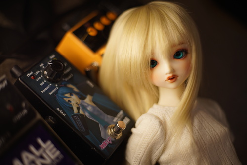
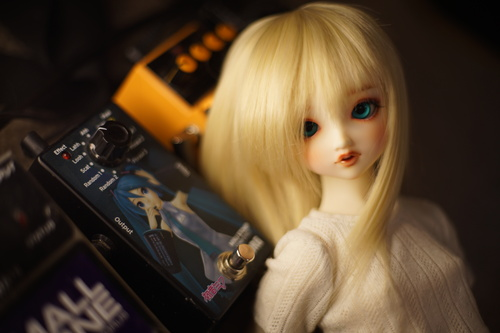
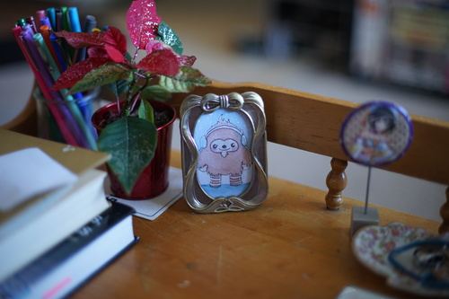

it's spring! its spring! its overwhelmingly spring!!
i saw a squirrel with something in its mouth sitting on the sidewalk. i walked a little closer and it seemed to be a wiggling baby squirrel and hopefully not a snack? i cant tell if it was a good or bad omen but i did see a baby animal today either way.
and then i saw a double rainbow! it was so pretty ;u; what a good start to my favorite season
i ordered a half gallon of texas pete last night. will i regret it? im not sure. its a little wild to think that in a few days i will have a ridiculous amount of my favorite hot sauce. i cant find it anywhere though. im so desperate...
i got my volks news 95 too!! its so fun to look at and even if i cant own the items i can look at them all i want! I really like the DWC2020 winner Strawberry Kimono Maiden but its also like a ton of money and i think i can bootleg something similar to it for minimal money. theres some other items i need to think about too..
princess sapphire is very very cute. knight sapphire is cute, but princess sapphire is incredibly cute so it must be the color combo or something. i ordered a pair of lucia's eyes that i've been watching for a while to create "princess sapphire"! the eyes are the same color but 18mm instead of 20mm. i would like to try a pair of 20s in her but i dont own any. i never really expected to like brown eyes either but they look really cute in her. i hope this will prevent me from deciding to enter for her if she gets a volksUSA lottery.

i wish all my boys had 80s outfits and also cowboy outfits... can i get uhhh a howard jones wig??
i didnt include three photos in my last blog post but i'm really into how cute hina is in them *_* this doll can go from ohime-chama to annoying teenage girl with a beta orbiter posse in 30 seconds
 

Thrift store finds were pretty good today if i may say so myself
cant say im a fan of these stinky dudes
my mom loves stuff like this for reasons unknown
it's ryan's
previous owner, JACK, quit on victory road. RIP.
not my style tbh but i gotta wear something to work. im sorry to admit i dress like a normie to work.
i finished my earring holder! my giant *ss squid hoops dont fit on it very well though. its really nice to see them all instead of them being in a pile.
i painted 3 options for my little ribbon frame. quatchi, button, and a furby because i couldn't come up with anything better. the more i look at the furb the more derpy he gets! they're too big for the frame i got today so i suppose ill have to draw or paint something else for that one.
ps. go thank saint-images and pompon for preventing auto-bee